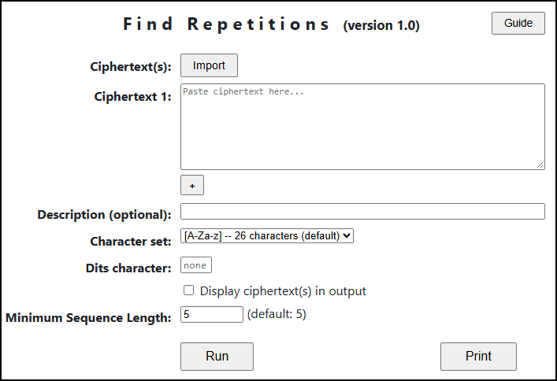
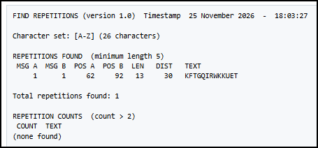
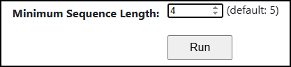
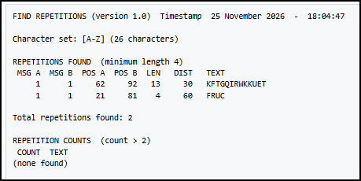

A single ciphertext manually inserted
The ciphertext we will examine is a Vigenère:
VYCTG GDWLB NCYIM CTIPM FRUCY TFKIA GEMGM JIGSZ GJCCW TVGCY
QIATF GERHM QKFTG QIRWK KUETU GWMGX FRUCT PUFDE FKFTG QIRWK
KUETT VRJAV QJRHOpen a clean copy of Find Repetitions and paste in the ciphertext:

Leave the other settings as they are and click Run.
The result is shown at the bottom of the window:

With the default minimum length of 5, the tool finds one repetition:
REPETITIONS FOUND (minimum length 5)
MSG A MSG B POS A POS B LEN DIST TEXT
1 1 62 92 13 30 KFTGQIRWKKUETA 13-letter repetition is not an accident. Its interval, shown under DIST, is 30.
To get shorter repetitions, lower the minimum length to 4:

Click Run to find every repetition of four or more letters:

This adds a second repetition:
MSG A MSG B POS A POS B LEN DIST TEXT
...
1 1 21 81 4 60 FRUCIts interval is 60. The factors that 30 and 60 share are 2, 3, 5, 6, 10, 15 and 30, so the period is one of these. A period of 2 or 3 would make a very weak cipher, so try 5 first. The plaintext below shows that 5 is correct.
Here is the plaintext, in rows of five letters beneath the key
CRYPT. Each row is one pass through the key, so each column
was enciphered with a single key letter:
CRYPT
-----
THEEN
EMYWI
LLATT
ACKAT
DAWNF
ROMTH
ENORT
HRIDG
ESEND
REINF
ORCEM
ENTST
OTHEN
ORTHR
IDGEB
EFORE
DAWNA
NDHOL
DTHEN
ORTHR
IDGEA
TALLC
OSTSThe plaintext contains the phrase THE NORTH RIDGE three times, but only the last two, 30 letters apart, produce a repetition. The first two lie 33 letters apart, which is not a multiple of 5, so they were enciphered by different parts of the key and come out different. This is why the intervals of genuine repetitions share the period as a factor.